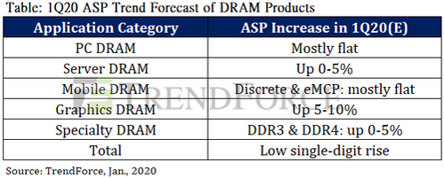
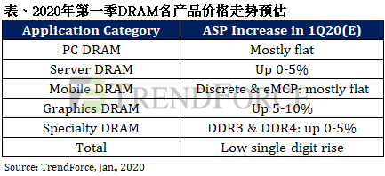
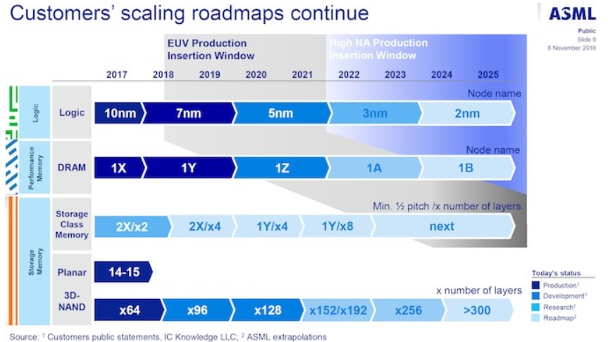

Breaking News
1. China-based Memory Fabs Continue Normal Operations Currently as Wuhan Coronavirus Has Yet to Impair Global Memory Supply, (TrendForce 2020-02-03)
On account of the Wuhan coronavirus outbreak’s impact on the global memory industry, investigations from the DRAMeXchange research division of TrendForce indicate that no DRAM or NAND flash fab in China has closed or partially suspended operations at the present. Hence, the overall production will remain unaffected for DRAM and NAND flash in the short run. …………
In terms of DRAM supply, one of China’s major DRAM manufacturers, CXMT, is located in Hefei, near the city of Wuhan; currently, the fab is operating as usual. CXMT’s expansion plan is still on schedule, unaffected by the outbreak for the time being. In terms of shipping, CXMT is also one of the major semiconductor companies in China. The company holds a national special license and is not affected by the current ban on domestic transportation of goods. Thus, CXMT’s customers in the country can still ship on time. Another Chinese DRAM manufacturer, JHICC, is in a similar situation as CXMT. Its fab remains operational as usual.
In terms of DRAM suppliers, of the three major suppliers, only SK Hynix’s production base in Wuxi is located in China, but since it is far away from Wuhan, it has not been directly impacted by the outbreak. Also, during the Chinese New Year, the shifts of most fab employees have already been scheduled, so the production line remains operational. Overall, there is currently no substantial impact on DRAM production, but it is still imperative to monitor whether the potential spreading of the virus can affect China’s logistics and transportation system, subsequently causing a nationwide material shortage.
集邦咨询：目前中国境内存储器厂区处于正常运作，武汉肺炎疫情尚未造成供给问题 (TrendForce 2020-02-03)
针对武汉疫情对全球内存产业的影响，集邦咨询半导体研究中心(DRAMeXchange)调查指出，位于中国境内的**DRAM与NAND Flash**工厂，目前没有任何产线有部分或全面的停线，意即生产数量在短期之内不会受到影响。加上第一季合约价已议定完成，因此集邦咨询仍维持DRAM与NAND Flash合约价第一季小幅上涨的预估。
从**DRAM供给面来看，中国DRAM**生产重镇的长鑫存储位于邻近武汉的合肥，目前工厂仍正常运作，扩产计划按进度进行，短期不受疫情影响。而在运输方面，长鑫存储属中国半导体重点企业之一，领有国家级特殊许可证，不受现在禁令影响，因此中国境内客户皆可按时出货。另一家中国**DRAM**生产商福建晋华情况与长鑫存储类似，工厂运作照常。
在**DRAM原厂方面，三大原厂仅SK海力士无锡厂区坐落于中国境内，因距离武汉较远，直接冲击不大，且春节期间厂内员工多早已有排班计划，因此产线仍如往常运作。整体而言，目前DRAM**生产面实质影响不大，但后续仍须观察整体物流运输系统是否受疫情影响，出现物料短缺情势。
…………
Market Trends
1.DRAM Contract Prices to Rise in 1Q20 as Power Outage at Samsung Fab Spurs Demand(TrendForce 2020-01-08)
According to the latest analysis from the DRAMeXchange research division of TrendForce, the consistent increase in DRAM spot prices since December and the power outage at Samsung’s Hwaseong fab on December 31, 2019 have not seriously impacted the supply side of the DRAM market. But on the demand side, memory buyers have furthered their willingness to build up inventories. Thus, TrendForce is again adjusting the 1Q20 DRAM contract price forecast from “mostly holding steady”, as previously reported, to “slightly trending upward”, indicating an earlier-than-anticipated kickoff of the cyclical upturn.
In the PC DRAM segment, although negotiations over 1Q20 contract prices are currently underway, TrendForce predicts a high probability that prices of memory products shipped to PC OEMs will trend either flat or slightly upward. To avoid the potential increase of the U.S. tariffs on Chinese imports, PC OEMs rushed the shipments of notebook PCs to the U.S. market in 4Q19. Subsequently, notebook PC shipments during 1Q20 will be weaker compared to traditional seasonality. On the other hand, PC OEMs are under pressure to raise their memory inventories because DRAM suppliers are curbing their bit output. The YoY growth of the total DRAM bit output in 2020 is still projected to be less than 13%. Hence, PC OEMs are actively preparing for a supply-driven price hike in the near future.
…………

集邦咨询：三星跳电事件激励买方预期性补货，1Q20 DRAM合约价起涨（TrendForce 2020-01-08)
根据集邦咨询半导体研究中心(DRAMeXchange)最新调查，随着近一个月来DRAM现货价格持续走扬，加上2019年12月31号三星华城厂区发生跳电，虽然整体内存的供给并没有因此事件受到重大影响，但观察到各产品别买方备货意愿进一步增强。因此，集邦咨询再次修正2020年第一季DRAM合约价格预测，由原先的「大致持平」调整为「小涨」，价格正式提前翻转向上。
标准型内存方面，虽然第一季的价格仍在议定中，但集邦咨询预估持平甚至小涨的可能性高。之前在中美贸易关税的不确定性下，大部分销往美国的笔电都赶在2019年第四季出货，导致2020年第一季的出货较为疲弱。但考量今年DRAM的供给位元成长幅度仅不到13%，加上三星跳电事件的影响，PC OEM厂已做好DRAM即将涨价的可能，当前都以建立更佳的库存水位为目标，因此在采购上愿意接受持平或更高的模组合约价格；若原厂能够在第一季增加供货量，买方甚至愿意接受更高的价格，以确保安全的库存水位。
…………

2.Year-end Release of New Game Consoles to Trigger 2H20 Demand Surge for Graphics DRAM and SSDs (TrendForce 2020-01-15)
As PS4 and Xbox One approach the end of their lifecycles, Sony and Microsoft recently revealed more details about the release schedules of PS5 and Xbox Series X, which will hit the market during the 2020 holiday season. According to the DRAMeXchange research division of TrendForce, the competition between next-gen video game consoles in 2H20 will incite a demand surge for Graphics DRAM and SSDs.
The two consoles will be equipped with AMD GPUs. While minor differences between the two consoles exist with respect to hardware customizations, both consoles are expected to support high resolutions and ray tracing. Also, PS5 and Xbox Series X are architecturally similar to a PC, lowering the barrier to the development of cross-platform games. To address the need for better graphics and smoother frame rates, both consoles will be equipped with the most advanced GDDR6 memory technology. PS5 will be equipped with as much as 16GB of GDDR memory, while Xbox Series X may come in 12GB and 16GB variants. In comparison to the GDDR5 memory used in PS4 (8GB) and Xbox One X (8/12GB), GDDR6 represents a significant upgrade in terms of performance and density. Sony and Microsoft will enter their peak procurement period for components after mid-2020. As well, NVIDIA will start offering its new lineup of GPUs based on a new microarchitecture codenamed Ampere in 2H20. These factors are projected to trigger a massive rush to stock up on GDDR6 memory later this year.
…………
新款游戏机年底抢市，预计下半年掀起图形处理内存与SSD抢货潮 (TrendForce 2020-01-15)
随着PS4与Xbox One游戏机逐渐迈入生命周期尾声，Sony与Microsoft二大游戏机厂商不约而同披露PS5与Xbox Series X的上市计划，预料将抢进2020年的圣诞档期。集邦咨询半导体研究中心(DRAMeXchange)预估，下半年开始，新世代游戏机的激烈竞争，将掀起一波图形处理内存与SSD的抢货潮。
从GPU来看，两者主机将都采用AMD的解决方案，客制化细节虽略有不同，但预计都会支持高分辨率并加入光影追踪，整体架构与PC相近，故在游戏的开发甚至跨平台移植都将更容易。而为了应对更绚丽的画面与更流畅的表现，两台主机都将采用目前最先进的GDDR6，如PS5的内存高达16GB，而Xbox Series X因为规格不同，将采用16GB与12GB二种；与目前PS4 8GB与Xbox One X 12/8GB的GDDR5相比，效能与容量皆显著提升。Sony与Microsoft预计会从年中之后进入超级采购周期，加上NVIDIA也会在今年下半年正式销售代号为Ampere的新一代GPU，预料将会掀起一波GDDR6的抢货大战。
…………
Vendor News
1. 美光 1z 奈米製程 DDR5記憶體送客戶試樣，預計 2021年正式量產(TechNews科技新报 2020-01-07)
…………
根據外電報導，美商記憶體大廠美光（Micron）7日正式宣布，開始向客戶出樣最新DDR5記憶體，以第3代10奈米級1z奈米製程打造，性能提升 85%。
…………
美光現在出樣的DDR5記憶體使用最新1z奈米製程，大概是12到14奈米節點，ECC DIMM 規格，頻率 DDR5-4800，比現在 DDR4-3200 記憶體性能提升 87% 左右，不過距離 DDR5-6400 效能還有點距離，還有提升的空間。
…………
AMD預計2021年Zen4架構處理器更換介面，開始支援DDR5記憶體，英特爾則是 14 奈米及 10 奈米製程處理器都沒有明確規劃支援 DDR5 記憶體。根據英特爾藍圖，要到2021年7奈米製程處理器Sapphire Rapids才開始支援DDR5，且還是以伺服器處理器為主，消費級處理器產品預計還要再晚。
據美光之前說法，正在生產第2代10奈米級1y奈米製程技術的12 Gb LPDDR4X及16 Gb DDR4記憶體，未來客戶針對DDR5記憶體試樣完成後，將開始準備1z奈米產線生產，但美光尚未決定 1z 奈米產線是否導入 EUV 極紫外光科設備，而競爭對手三星已在1z奈米製程導入EUV設備。

2.CES 2020: Micron Begins to Sample DDR5 RDIMMs with Server Partners (ANANDTECH 2020-01-07)
Micron announced at CES that it had started sampling of its DDR5 Registered DIMMs with select partners. The very fact that Micron started sampling of DDR5 modules indicates that its partners already have server CPUs/platforms that support DDR5 memory.
Micron expects its first-generation DDR5 products to offer ‘more than’ 1.85-times performance increase when compared to JEDEC-standard DDR4 memory. There are multiple improvements to DDR5 because in addition to data transfer rates of up to 6400 MT/s, DDR5 also has improved functionality.
…………
Increasing usable memory bandwidth and capacity is crucially important for next-generation server platforms that use processors with even higher number of cores.
Micron did not reveal specifications of its DDR5 RDIMMs it sent to partners or disclose when it plans to start commercial shipments of DDR5 memory. We can speculate that DDR5-enabled server platforms are several quarters away, but it is up for actual platform developers to set launch dates.
3.SK Hynix operating profit falls 87% in 2019 (ZDNET 2020-01-31)
SK Hynix has reported 2.71 trillion won in operating profit for the 2019 full year, a steep decline of 87% from a year prior. The semiconductor company also saw a revenue of 27 trillion won, a drop of 33% from 2018.
Margin rate also dropped to 10% from its record high of 52% last year.
For the fourth quarter, SK Hynix made 236 billion won in operating profit, a drop of 95% and half of the expected 460 billion won from South Korean analysts**.
…………
SK Hynix said it expects the DRAM market to improve starting in the second half of 2020. It will aim at expanding LPDDR5** which is expected to become mainstream this year.
“Demand recovery in server DRAM and the expansion of 5G smartphones is expected,” a company spokesman said. In NAND, the trend to offer high memory capacity in PCs and solid-state drives for data centers will spur growth, they said.
…………
4. Here’s Some DDR5-4800: Hands-On First Look at Next Gen DRAM (ANADTECH 2020-01-13)
Just like all major makers of DRAM, SK Hynix produced its first DDR5 memory chips a couple of years ago and has been experimenting with the technology since then. To that end, it is not surprising that the company displayed its DDR5 RDIMM at CES 2020, which implies that development is proceeding as planned.
At the trade show, SK Hynix demonstrated its 64 GB DDR5 RDIMM with ECC rated for a 4800 MT/sec/pin data transfer rate. The module marked as HMCA8GR8MJR4C-EB carries 20 memory chips marked as H5CNAG4NMJ as well as IDT’s P8900-Z2 register clock driver (RCD). The memory devices are marked differently than the ones SK Hynix used for 16 GB RDIMM back in late 2018, though we do not know the difference.
…………
At present, it is unclear when exactly the first DDR5 platforms are set to hit the market, but a good guess would be 2021. One of the first platforms to confirm support for DDR5 memory has been Intel’s Xeon Sapphire Rapids, set for deployment in the Aurora Supercomputer. AMD support for DDR5 is unknown so far.
5. 三星电子副董事长：内存芯片市场开始出现恢复迹象 (新浪科技 2020-01-08)
新浪科技讯 北京时间1月8日晚间消息，据国外媒体报道，韩国巨头三星电子副董事长Kim Ki-nam周二表示，内存芯片市场开始出现改善迹象，这使得三星电子需要仔细考虑其位于京畿道平泽市的第二季内存芯片工厂的启动时间。
这位三星电子副董事长在拉斯维加斯举行的CES展会上对媒体表示：“有迹象表明市场正在复苏。但是现在还很难预测市场复苏了多少，也很难预测哪些因素将会起作用。”
三星的第二座内存芯片生产工厂即将建成，其面积相当于400个足球场，该工厂计划在今年内投产。韩亚金融学院发表的一份报告称，芯片价格有可能在今年第一季度内趋向稳定，并且在第二季度中恢复。
Kim表示，三星有可能根据市场的动向，很快决定何时启动他们在平泽建设的第二家内存芯片工厂。他说到：“我们将根据不断变化的市场情况，以及我们的（业务）安排作出决定。“至于这家工厂是否会大量生产先进的NAND芯片，Kim表示：”这也需要取决于市场状况。“
…………
半导体行业如今已经显示了复苏的迹象，同时，由于5G服务以及可折叠屏幕手机的推出，市场对智能手机的需求也迎来了提升。一些分析师预计，三星今年的运营利润最高可能提升40%。(永妍)
6. 南亚科完成自主研发10纳米级DRAM生产技术 (TechNews科技新报 2020-01-13)
南亚科总经理李培瑛近日宣布，已完成自主研发10纳米级DRAM技术。
针对南亚科自行新研发出10纳米级制程的未来发展方向，李培瑛则是表示，南亚科成功开发出10纳米级DRAM新型存储器生产技术，DRAM产品可持续微缩至少3个世代，未来进入10纳米制程技术也将采自主开发技术为主，不再向合作伙伴美光（Micron）申请授权。这样不仅减少授权费用支出，也能针对自行研发的技术适时优化，以提升至最佳生产效率。
预估，第一代10纳米级前导产品包括8Gb DDR4、LPDDR4及DDR5将建构在自主研发的制程及产品技术平台上，预计2020下半年陆续进入产品试产。至于，第2代10纳米级生产技术目前正在研发阶段，预计2022年开始导入试产。
…………
李培瑛还强调，就目前的情况看来，DRAM市场包括现货价与合约价的平均价格都已经止跌回稳，除了三星跳电事件对短期现货价有波动，长期来看就是持稳，这也使得南亚科2020年第1季毛利率将不会再下滑。
整体来说，虽然2019年第4季较第3季的营收有所下滑，但是优于2018年的第4季。而未来的2020年第1季预估会比2019年第4季还有成长，第2季也将会持续提升，加上预计导入10纳米级新制程，资本支出上半年仍较少，下半年起预计会有增加，实际数字有待董事会最后决定。。